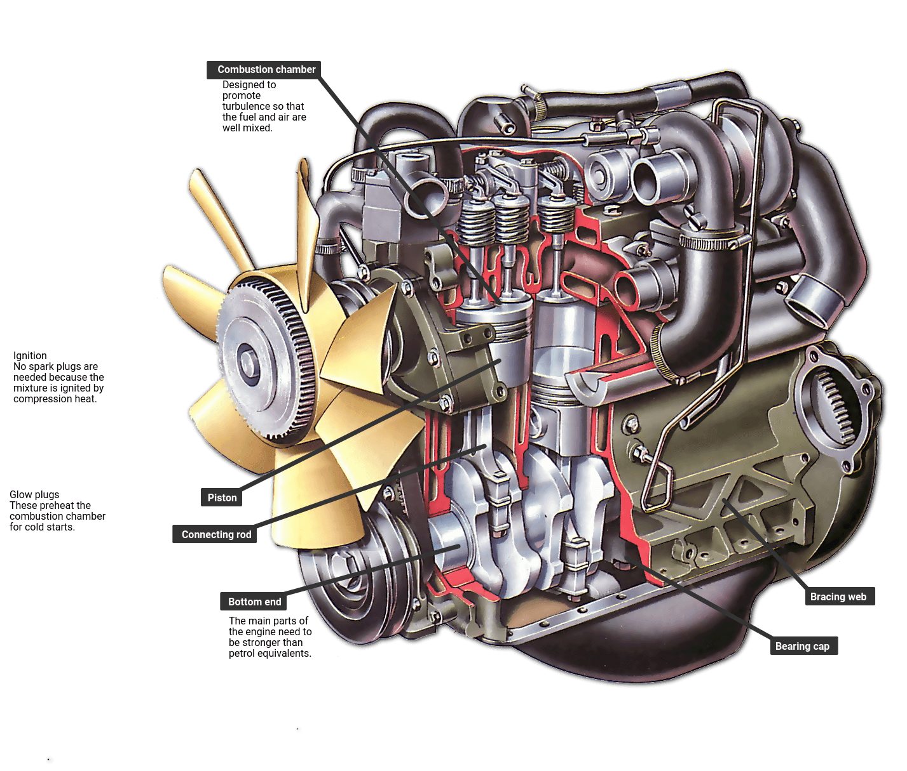
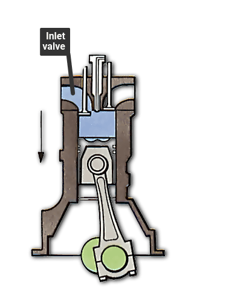
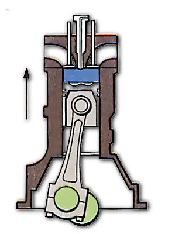
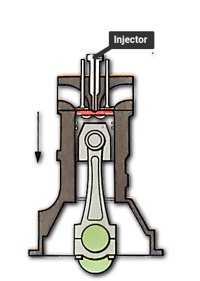
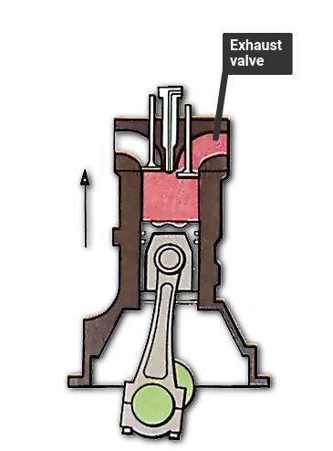
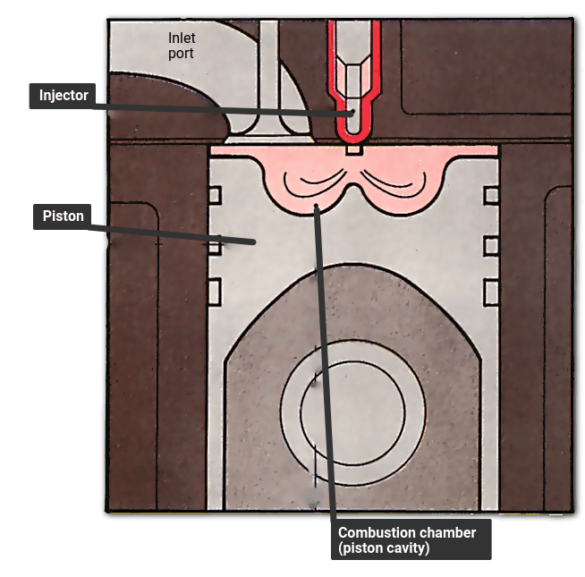
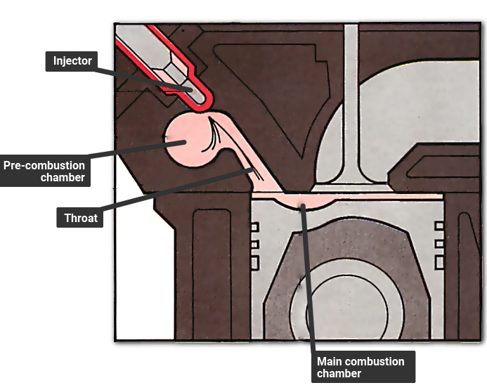
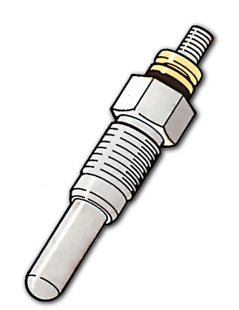

The Video Course
teaches you every thing about modern cars
Traditionally, diesel engines have always been seen as noisy, smelly and underpowered engines of little use other than in trucks, taxis and vans. But as diesel engines and their injection system controls have become more refined, the 1980s have seen that situation change. In the UK in 1985 there were almost 65,000 diesel cars sold (about 3.5 per cent of the total number of cars sold), compared with only 5380 in 1980.

Many car diesels are based on existing petrol engine designs, but with the major components strengthened to cope with the higher pressures involved. Fuel is supplied by an injection pump and metering unit, which are usually mounted on the side of the engine block. No electric ignition system is needed. The main advantage of diesel engines over petrol engines is their lower running cost. This is partly a result of the greater efficiency of the high compression ratio diesel engine and partly because of the lower price of diesel fuel - although the price difference varies, so the advantage of running a diesel car will be slightly reduced if you live in an area with high-priced diesel fuel The service intervals are often longer too, but many diesel models require more frequent oil changes than their petrol counterparts.
The diesel car's main drawback is its lower performance compared with petrol engines of equivalent capacity. One way around the problem is to simply increase the size of the engine, but this often results in a significant weight increase. Some manufacturers add turbochargers to their engines to make them competitive in terms of performance; Rover, Mercedes, Audi and VW are among the manufacturers who produce turbodiesels.
Induction

As the piston begins to move down the bore, the inlet valve opens and air is sucked in
Compression

The inlet valve closes at the bottom of the stroke. The piston rises to compress air.
Ignition

Fuel is squirted in at the top of the stroke. It ignites and forces the piston down
Exhaust

On the piston's upward travel, the exhaust valve opens and burned gas is expelled.
A diesel engine works differently from a petrol engine, even though they share major components and both work on the four-stroke cycle . The main differences are in the way the fuel is ignited and the way the power output is regulated. In a petrol engine, the fuel/air mixture is ignited by a spark . In a diesel engine, ignition is achieved by compression of air alone. A typical compression ratio for a diesel engine is 20:1, compared with 9:1 for a petrol engine. Compressions as great as this heat up the air to a temperature high enough to ignite the fuel spontaneously, with no need of a spark and therefore of an ignition system. A petrol engine draws in variable amounts of air per suction stroke , the exact amount depending on the throttle opening. A diesel engine, on the other hand, always draws in the same amount of air (at each engine speed), through an unthrottled inlet tract that is opened and closed only by the inlet valve (there is neither a carburettor nor a butterfly valve). When the piston reaches the effective end of its induction stroke, the inlet valve closes. The piston, carried round by the power from the other pistons and the momentum of the flywheel , travels to the top of the cylinder , compressing the air into about a twentieth of its original volume . As the piston reaches the top of its travel, a precisely metered quantity of diesel fuel is injected into the combustion chamber . The heat from compression fires the fuel/air mixture immediately, causing it to burn and expand. This forces the piston downwards, turning the crankshaft . As the piston moves up the cylinder on the exhaust stroke , the exhaust valve opens and allows the burned and expanded gases to travel down the exhaust pipe . At the end of the exhaust stroke the cylinder is ready for a fresh charge of air.
The major components of a diesel engine look like those of a petrol engine and perform the same jobs. However, diesel engine parts have to be made much stronger than their petrol engine equivalents because of the much higher loads involved. The walls of a diesel engine block are normally far thicker than a block designed for a petrol engine, and they have more bracing webs to provide extra strength and to absorb stresses. Apart from being stronger, the heavy-duty block can also reduce noise more effectively. Pistons, connecting rods , crankshafts and bearing caps have to be made stronger than their petrol engine counterparts. The cylinder head design has to be very different because of the fuel injectors and also because of the shape of its combustion and swirl chambers.
For any internal combustion engine to operate smoothly and efficiently, the fuel and air need to be properly mixed. The problems of mixing fuel and air are particularly great in a diesel engine, where the air and fuel are introduced at different times during the cycle and have to be mixed inside the cylinders. There are two main approaches direct injection and indirect injection. Traditionally, indirect injection has been used because this is the simplest way of introducing turbulence so that the injected fuel spray mixes well with the highly compressed air in the combustion chamber. In an indirect injection engine there is a small spiral swirl chamber (also called a pre-combustion chamber) into which the injector squirts the fuel before it reaches the main combustion chamber itself. The swirl chamber creates turbulence in the fuel so that it mixes better with the air in the combustion chamber. The drawback with this system is that the swirl chamber effectively becomes part of the combustion chamber. This means that the combustion chamber as a whole is irregularly shaped, causing combustion problems and hampering efficiency
A direct injection engine does not have a swirl chamber into which the fuel is injected - the fuel goes straight into the combustion chamber instead. Engineers have to pay very careful attention to the design of the combustion chamber in the piston crown to ensure that it creates enough turbulence
A diesel engine is not throttled like a petrol engine, so the amount of air sucked in at any particular engine speed is always the same. Engine speed is regulated purely by the amount of fuel squirted into the combustion chamber - with more fuel in the chamber, combustion is fiercer and more power is produced. The accelerator pedal is connected to the metering unit of the engine's injection system rather than to the throttle butterfly as with a petrol engine. Stopping a diesel still involves turning off the `ignition' key but, rather than cutting off the sparks, this closes an electric solenoid that cuts off the fuel supply at the injector pump of the fuel metering and distribution unit. The engine then only has to use a small amount of fuel before it comes to a halt. In fact, diesel engines come to rest more quickly than petrol engines because the much higher compression has a greater slowing-down effect on the engine.
As with petrol engines, diesel engines are started by being turned with an electric motor , which begins the compression-ignition cycle. When cold, however, diesel engines are difficult to start, simply because .compressing the air does not lead to a temperature that is high enough to ignite the fuel. To get around the problem, manufacturers fit glow plugs . These are small electric heaters, powered from the car's battery , which are switched on a few seconds before attempting to start the engine.
The fuel used in diesel engines is very different from petrol. It is slightly less refined, resulting in a heavier, more viscous and less volatile liquid . These physical characteristics often lead to it being referred to as 'diesel oil' or 'fuel oil'. On diesel pumps on garage forecourts it is often called 'derv', short for diesel-engined road vehicles. Diesel fuel can begin to stiffen slightly or even solidify in very cold weather. This is compounded by the fact that it can absorb very small quantities of water, which may freeze. All fuels absorb tiny amounts of water from the atmosphere and leakage into underground storage tanks is quite common. Diesel fuel can handle a water content of up to 50 or 60 parts in a million without problems—to put this into perspective this is about a quarter of a mug-full of water for every ten gallons of fuel. Any freezing or 'waxing' can block fuel lines and injectors and prevent the engine from running. This is why, in very cold weather, you will occasionally see people playing blow lamps on their truck's fuel lines.

Direct injection means the fuel is squirted directly into the combustion chamber in the top of the piston crown. The chamber shape is better, but it is more difficult to make the fuel mix properly with the air and burn without producing the harsh, characteristic diesel 'knock'

Indirect injection means the fuel is squirted into a small precombustion chamber. This leads to the main combustion chamber. With this design, the ideal combustion chamber shape is compromised

To pre-heat the cylinder head and engine block before cold starts, the diesel uses glow plugs. They look like short, stubby spark plugs and are connected to the car's electrical system. Elements inside heat up very quickly once power is applied. Glow plugs are activated either by an auxiliary position on the steering column switch, or by a separate switch. On the latest designs they automatically switch themselves off once the engine has fired and is accelerated above idling speed.